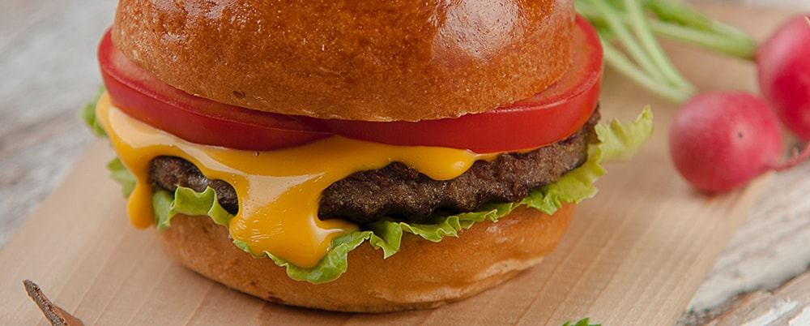
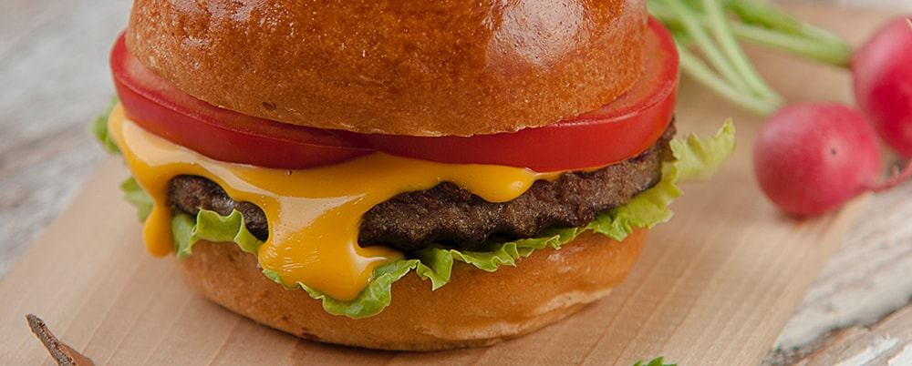

En un bol, mezclar la carne picada, la cebolla, el ajo y el huevo hasta que estén bien integrados todos los ingredientes.
Hacer cuatro albóndigas con la mano y darles forma de hamburguesas.
Cocinar las hamburguesas de ambos lados en una sartén aceitada, hasta que estén bien cocidas y doraditas.
En una sartén aceitada, dorar las rodajas de cebolla y los tomates cortados por la mitad.
Calentar los panes en el horno abrirlos al medio, distribuir las hamburguesas, sumar 2 fetas de queso cheddar, un poco de cebolla y algunos tomatitos.
Sugerencia: servir las hamburguesas acompañadas de papas al horno condimentadas con orégano fresco, sal y pimienta.
En un cazo pon el azúcar con la cucharada sopera de agua y mezcla.
Pon el cazo a fuego medio y, sin remover, espera a que se forme el caramelo y tome la tonalidad que prefieras pero sin que se oscurezca demasiado, con que empiece a estar dorado es suficiente.
Aparta el cazo del fuego e incorpora la mantequilla y mueve un poco el cazo para ayudar a que se mezcle y se derrita.
Calienta la nata (en otro cazo o en el microondas) hasta que esté casi hirviendo y viértela sobre el cazo junto con la pizca de sal. Ahora sí puedes mezclar con una cuchara o una espátula.
Pon de nuevo el cazo en el fuego a temperatura media un par de minutos para que se integre todo y removiendo de vez en cuando
Sugerencia: servir las hamburguesas acompañadas de papas al horno condimentadas con orégano fresco, sal y pimienta.
Corta el pan en rebanadas gruesas de hasta 2 cm de grosor, aunque esto va en gustos.
Mezcla en un bol los huevos con la leche, el azúcar, la sal y la canela. No es necesario que bastas en exceso sino simplemente que se mezclen los ingredientes, así evitaremos que salga espuma.
Coloca las rebanadas de pan en una bandeja en la que quepan lo más justas posible pero sin estar unas encima de otras.
Vierte por encima la mezcla y deja que reposen, dándoles la vuelta cada 2 o 3 minutos. El tiempo de reposo depende del tipo de pan aunque suele rondar los 10 minutos.
Pon una sartén a fuego medio-bajo con un poco de mantequilla y en cuanto esté derretida coloca encima las rebanadas de pan. Yo he tenido que prepararlas en dos tandas.
Cocínalas hasta que se doren por un lado, tardarán en torno a 5 minutos o incluso menos, dependiendo del tipo de pan y de la temperatura del fuego.
Dales la vuelta y que se cocinen de igual forma por el otro, y ya tienes listas las tostadas francesas o french toast.